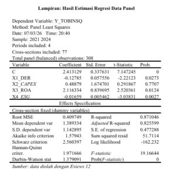
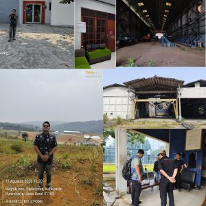
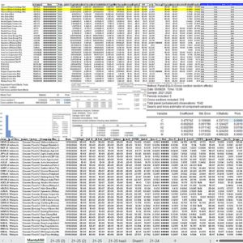
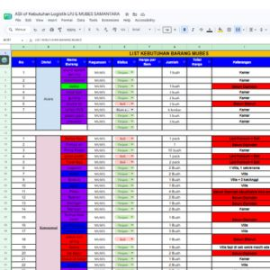
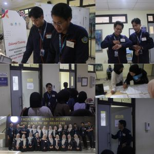

// Highlight

Financial Analysis — PT Estika Tata Tiara
Menganalisis kinerja keuangan PT Estika Tata Tiara menggunakan Excel melalui financial ratios, dashboard, dan key insights untuk mengevaluasi kondisi serta perkembangan perusahaan.

Company Valuation Research — Undergraduate Thesis
Menganalisis pengaruh DER, Capital Expenditure, Profitabilitas, dan ESG Score terhadap nilai perusahaan pada perusahaan yang terdaftar di BEI periode 2021–2024 menggunakan regresi data panel.

Property Valuation & Asset Analysis
Berpengalaman dalam penilaian tanah, bangunan, ruko, pabrik, alat berat, dan mesin melalui analisis data pasar, kondisi aset, serta pendekatan valuasi yang relevan.

Financial Reporting & Excel Analysis
Mengolah dan menyajikan data keuangan menggunakan Excel untuk mendukung financial reporting, analisis rasio, perbandingan kinerja, dan penyusunan informasi keuangan secara terstruktur.

Budgeting & Cost Optimization
Pengalaman menyusun budgeting, melakukan re-budgeting, cost prioritization, dan mengoptimalkan pengeluaran dalam pengelolaan kegiatan.

Recruitment Administration & Field Coordination
Mengelola administrasi Open Recruitment Beasiswa Karya Salemba Empat sekaligus mendukung koordinasi lapangan, pengolahan data kandidat, komunikasi dengan peserta, dan pelaksanaan proses seleksi.